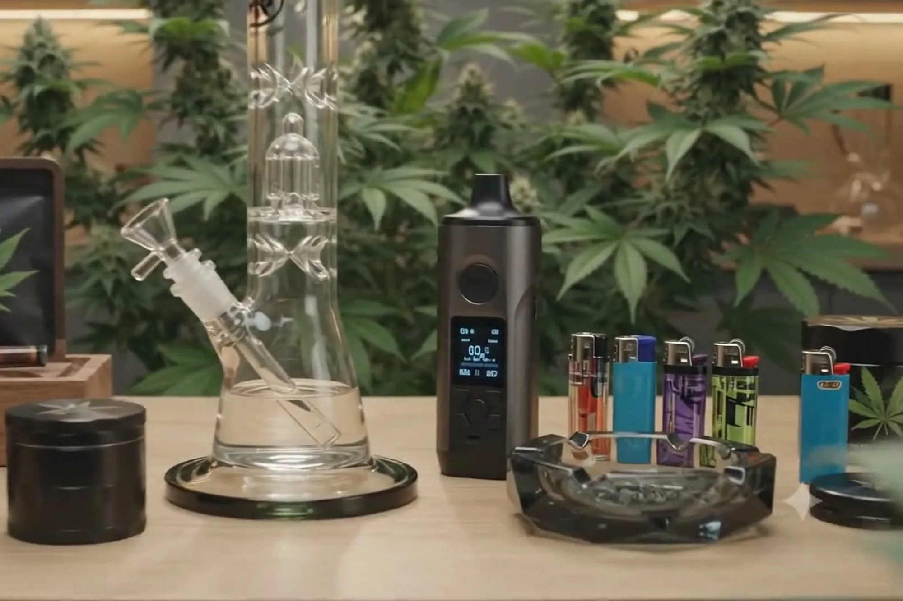
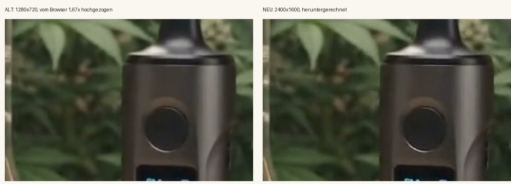
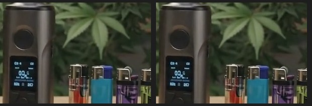

Die Bildfläche im Hero ist bei 1920 px rund 1037 × 700 CSS — auf einem 2×-Display
also 2074 × 1400 Gerätepixel. Das Poster hatte 1280 × 720, wurde also 1,67× hochskaliert.
Jetzt liegt eine Datei mit 2400 × 1600 vor: sie wird heruntergerechnet, nicht hochgezogen.
dreifach abgestuft: 1200 / 1600 / 2000 / 2400WebP 64–153 KBMotiv rechts der Mitte

So sitzt das Bild in der Fläche: 1037 × 700, `cover`, kein Beschnitt der Hauptmotive.
1:1-Gerätepixel

So sieht es der Bildschirm wirklich: links das alte Poster, wie der Browser es
auf 2074 Gerätepixel hochzieht — rechts die neue Datei, heruntergerechnet. Gleicher Ausschnitt,
gleiche Bildschirmgröße, keine Vergrößerung im Vergleich.

Der Rechenweg: links reine Lanczos-Vergrößerung, rechts das
Super-Resolution-Modell (EDSR ×2) vor der Endgröße. Kein Filter, der etwas erfindet —
nur Kanten, die die Quelle schon hat.